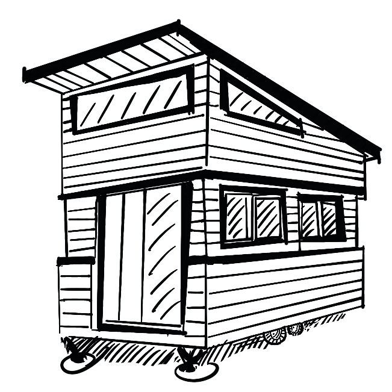
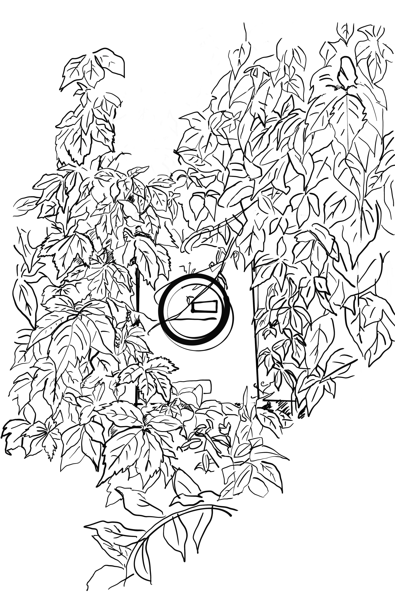

Home
historical examples
MODERN EXAMPLES
Budget
Resources
WHAT EVEN IS A TINY HOUSE?

A tiny home is pretty much what it sounds like: a small house, or a "micro-dwelling," if you will.
They are typically 12-feet-wide and around 300 total-square-feet.
Living the Tiny Home lifestyle is more than just minimizing your space. It's about creating a self-sustainable, mutualistic relationship with the natural land you live on, too.
Many homeowners around the world have embraced the tiny home lifestyle - challenges and all - in hopes of cutting down on living expenses and carbon footprints.

PROS AND CONS OF LIVING IN A TINY HOME
PROS
CONS
cheaper alternative for mortgage/utilities
legalwork/Red-tape over zoning laws/construction standards differ state to state/country to country
smaller carbon footprint/cleaner consumption
without careful planning, can be correctively expensive
self-sustainable
cramped-living, not for the claustrophobic
highly mobile/flexible living options
mileage may vary regarding home security
charming!
heating/cooling systems can be tricky to set-up, and may potentially lead to harmful mold build-up